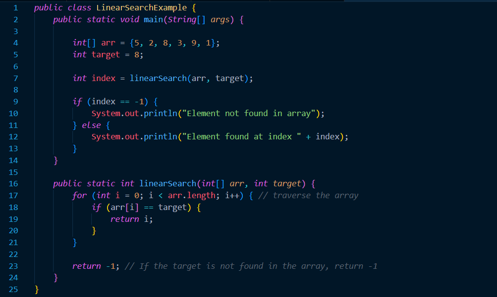
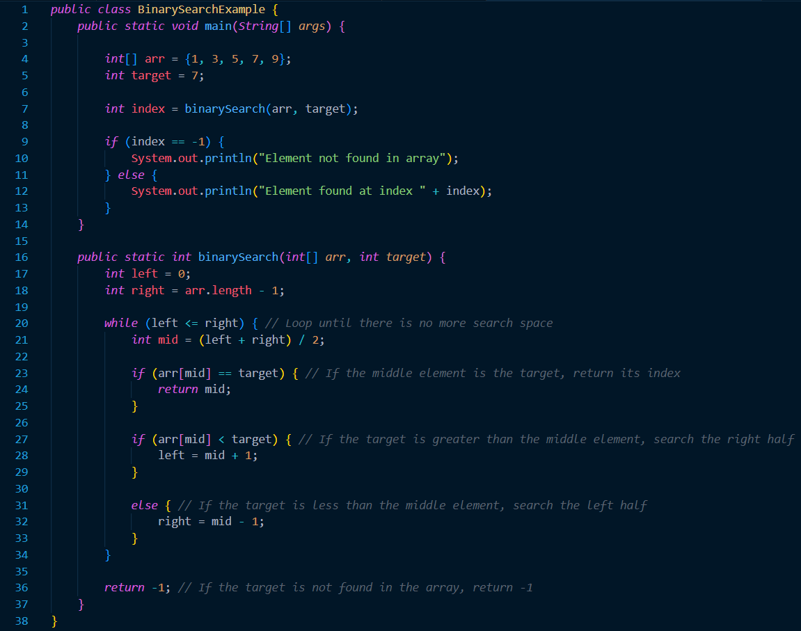
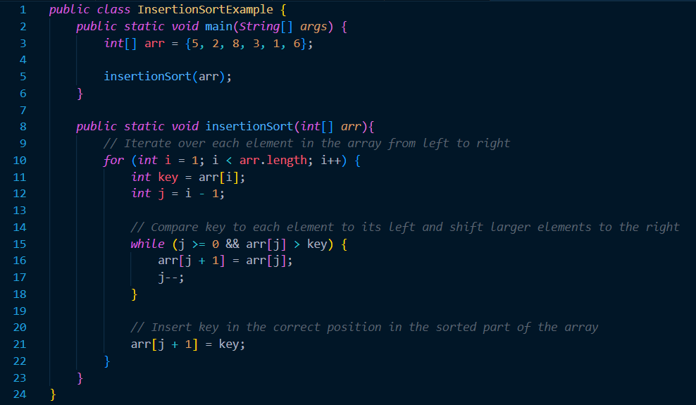
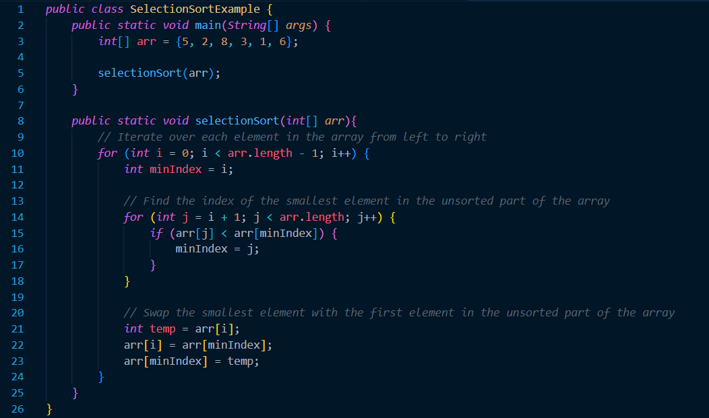

Searching and Sorting
Prerequisite Knowledge and Terms
Before proceeding with this tutorial, make sure you are familiar with the following concepts:- A basic understanding of variables, primitive data types and objects.
- Familiarity with forms of iteration such as 'for loops' and 'while loops.'
- Familiarity with forms of conditional statements such as 'if,' 'else if' and 'if-else' statements
- Element: A specific value inside an array.
- Index: A 0 based positioning system that determines the positions of specific elements inside an array.
- Array length: the number of elements inside the array. Once the array length is determined, it cannot be changed.
Introduction
Searching and sorting are very similar concepts. In fact, sorting algorithms use searching algorithms. To begin with, a searching algorithm is an algorithm that searchs an array of elements for a specific value. Searching algorithms are very advantageous because they provide an extremely effecient way of find a specific item of data in a potentially extremely large data set.Sorting algorithms on the other hand allow searching algorithms to perform better. However, in all of its irony, sorting algorithms use searching algorithms within them. A sorting algorithm is a system that sorts an array of elements in a particular order. Throughout the rest of this tutorial, you will explore different types of sorting algorithms, and how each of them use sorting algorithms in their own way.
Searching Algorithms
There are two main types of searching algorithms that we will explore throughout this tutorial: linear search and binary search. To begin with, linear search is the most basic searching algorithm. It involves traversing the array, and checking if each element is equal to the target element we are looking for. This algorithm is useful for arrays/ArrayLists that are not sorted in a particular order. However, this algorithm can be slow and ineffecient for arrays/ArrayLists that are very long. The example below is the implementation of linear search.
Binary search works a lot different than a linear search. First off, binary search relies on the fact that the data is sorted prior to implenting the search. Next, binary search works in series of steps. The first step is to find the middle element of the array. Following this, there are 3 conditional statements:
- Check if the target is equal to the middle element: return target index
- Check if the target is less than the middle element: Repeat the process with the middle element of the bottom half the array
- Check if the target is more than the middle element: Repeat the process with the middle element of the top half the array

Sorting Algorithms
Sorting is an essential operation in computer science that involves arranging elements in a collection in a particular order. In Java, there are many built-in methods that can be used to sort arrays and collections of objects. However, understanding the underlying algorithms behind these methods is crucial to making informed decisions about which sorting algorithm to use for a particular use case. In this part of the tutorial, we are going to talk about 2 important sorting algorithms: Insertion sort and selection sort.Insertion sort is a multiple step sortign algorithm. The beginning of the algorithm is to loop over each element in the array from left to right, starting with the second element. For each element, we compare it to the elements to its left and move it to the correct position in the sorted part of the array. Below is the implementation of insertion sort:

Selection sort is sorting algorithm very similar to insertion sort. It begins with looping over each element in the array from left to right, starting with the first element. For each element, we find the index of the smallest element in the unsorted part of the array, swap it with the first element in the unsorted part of the array, and then move on to the next element. To find the index of the smallest element in the unsorted part of the array, we loop over each element to the right of the current element and compare it to the current smallest element. If we find a smaller element, we update the index of the current smallest element. Below is the implementation of selection sort:

Additional Takeaways
- When creating searching and sorting arrays, by careful not to have an `off-by-one` error. These errors occur when you incorrectly initialize or terminate loops or fail to account for the correct array indices. This can lead to incorrect results or even runtime errors.
- Make sure to test your algorithm with edges cases. Your program should work no matter what data is inputed, so it is important you take care of those cases as well.